Project 4: [Auto]Stitching Photo Mosaics
CS180: Introduction to Computer Vision and Computational Photography
Part A: Image Warping and Mosaicing · Part B: Feature Matching for Autostitching
I estimate homographies from manual and automatic correspondences, rectify planar objects, and stitch three image pairs. I also compare blending methods and cylindrical projections.
A.1: Source Photographs
For each campus pair, I stayed in one position and rotated the camera. I moved between the two campus scenes. The Iceland pair was captured from a fixed viewpoint. Each pair has overlapping content that I use to select matching points.
I apply the stored image orientation, convert the photographs to RGB, and resize them to a maximum side length of 1400 pixels. All point coordinates and reported pixel errors refer to these working images.
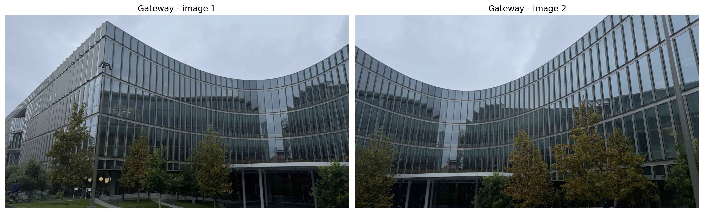
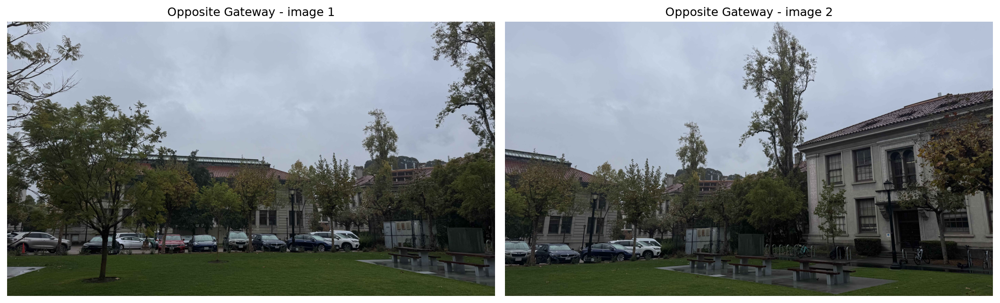
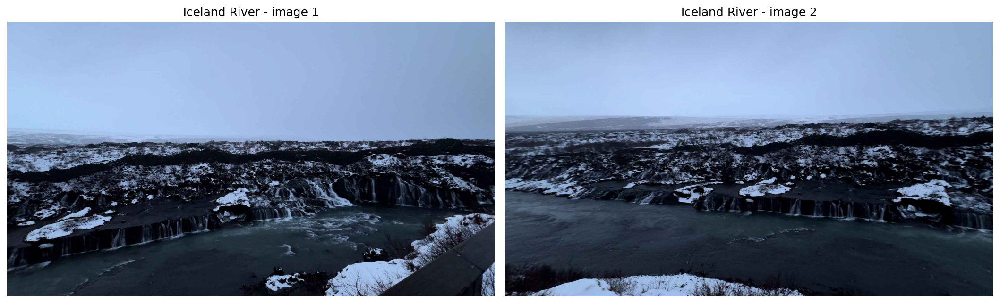
A.2: Recover Homographies
I select 12 point pairs for each mosaic. On the buildings, I use corners and window-frame intersections. For Iceland, I use rocks and snow boundaries rather than moving water. The same number identifies a matching point in both images.
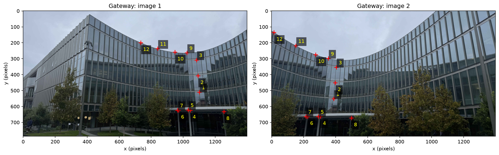
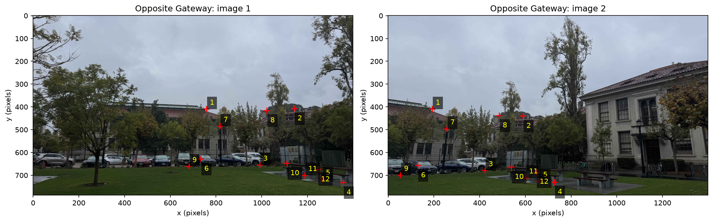
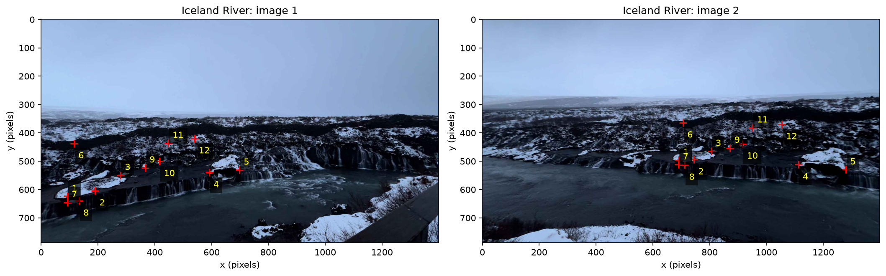
Homography Estimation
I implement computeH(im1_pts, im2_pts) to map image 1 to image 2. Fixing the bottom-right entry of $H$ to 1 leaves eight unknowns. For a correspondence $(x,y)\leftrightarrow(u,v)$:
Rearranging gives two linear equations per correspondence:
Four pairs give the minimum eight equations, but small clicking errors can make that fit unstable. I use 12 pairs spread across the overlap, giving 24 equations for eight unknowns, and solve $Ah=b$ with np.linalg.lstsq. This minimizes the algebraic residual. I separately measure reprojection error as the distance between a projected point and its selected match in image 2.
Recovered Matrices and Errors
Gateway
Opposite Gateway
Iceland River
| Image pair | RMS error | Maximum error |
|---|---|---|
| Gateway | 1.537 px | 3.115 px |
| Opposite Gateway | 1.939 px | 3.175 px |
| Iceland River | 1.115 px | 2.204 px |
A synthetic test recovers a known homography. The errors above describe the selected fitting points, so I also inspect the mosaic overlaps for alignment elsewhere.
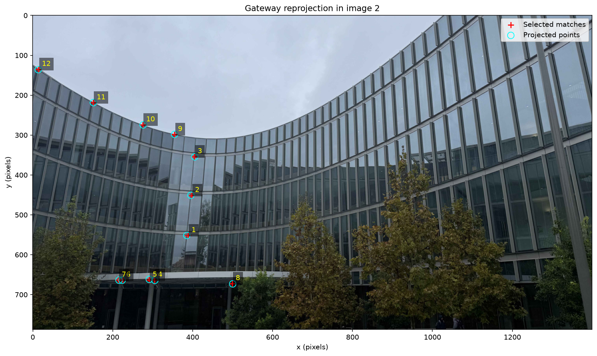
A.3: Warp the Images
Inverse Warping and Interpolation
I implement inverse warping. First, I transform the four source corners to find the output bounds. For each output pixel, I apply $H^{-1}$, divide by the homogeneous coordinate, and sample the source image. Looking up a source position for every destination pixel avoids the gaps caused by forward mapping. A Boolean mask records which output pixels are valid, so black image pixels are not mistaken for empty space.
warpImageNearestNeighbor rounds to the nearest source pixel. warpImageBilinear combines the four surrounding pixels. For a source position $(x,y)$, I set $x_0=\lfloor x\rfloor$ and $y_0=\lfloor y\rfloor$. The offsets are $d_x=x-x_0$ and $d_y=y-y_0$. The four weights are:
I multiply each weight by its corresponding RGB sample and add the four contributions. Positions outside the source image are marked invalid. At the right or bottom boundary, the neighboring index is clamped to the last pixel. Both methods return the warped image, its valid mask, and its origin in the destination coordinate system.
Both sampling methods use NumPy indexing and arithmetic. Identity, integer-translation, and half-pixel tests check the coordinates and interpolation weights.
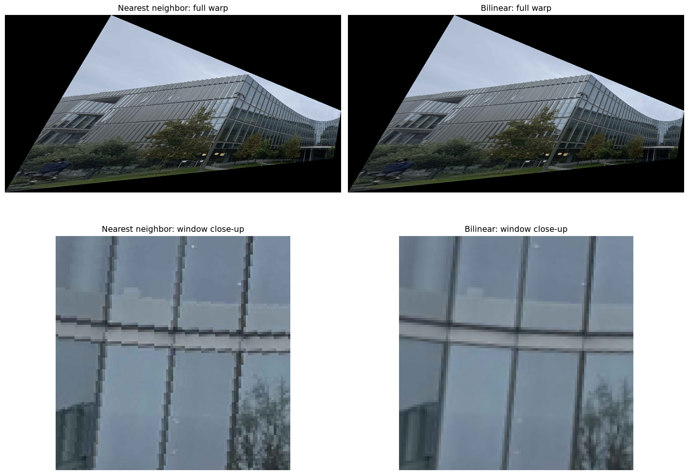
Rectification
I select the four corners in top-left, top-right, bottom-right, bottom-left order relative to the upright object. I map them to the corresponding corners of an upright rectangle, so the destination points are defined by the known shape rather than a second photograph. The painting uses the painted area inside its frame. Its dimensions are 65.1 cm wide by 100.3 cm high, from the Getty catalog. The business card measures approximately 5.1 cm wide by 8.9 cm high.
I use an output height of 700 pixels and set the width from the physical proportions. The painting becomes 455 × 700 pixels and the card becomes 402 × 700 pixels. I crop each source around the selected object before warping, then extract the destination rectangle.
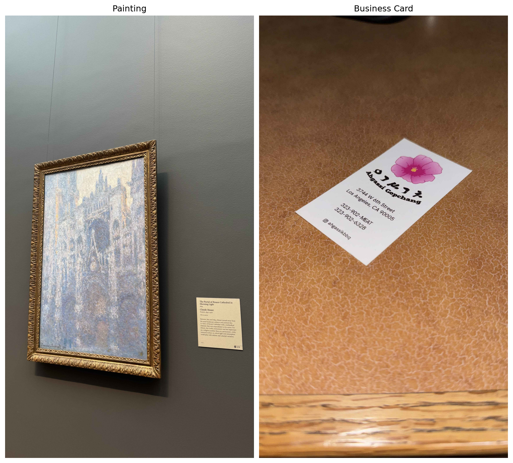

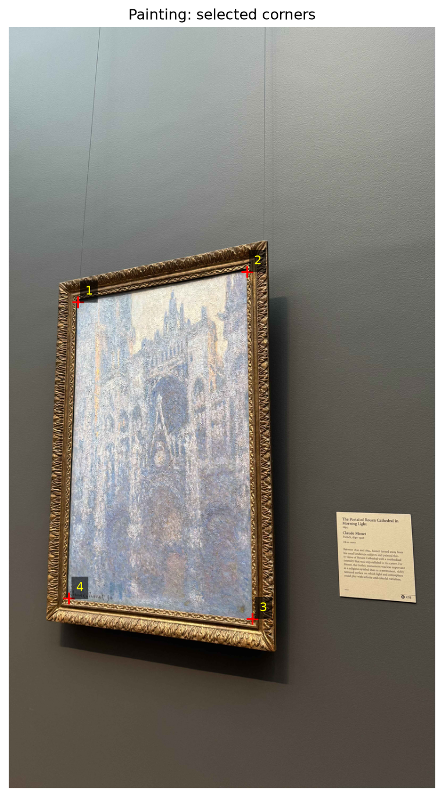

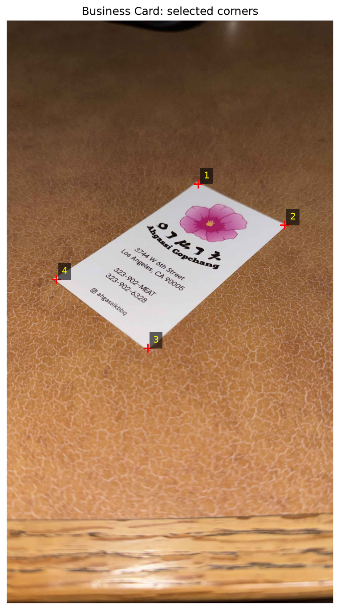
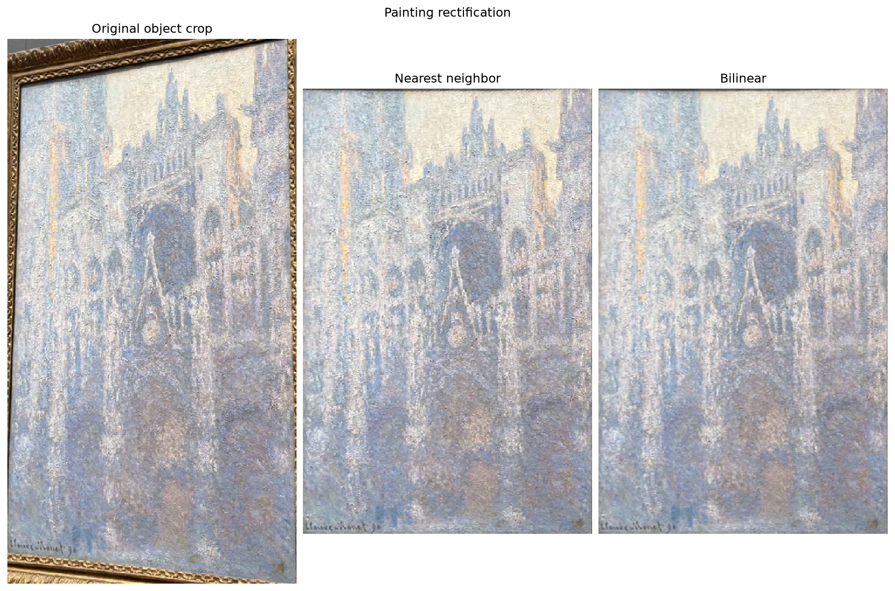
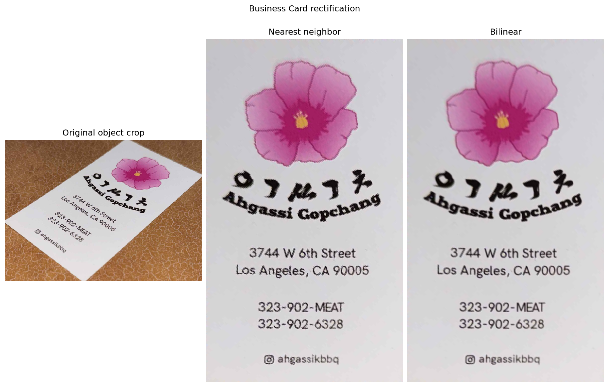
Speed and Quality Comparison
| Input | Nearest neighbor | Bilinear |
|---|---|---|
| Gateway full image | 2.117 s | 4.091 s |
| Painting | 0.268 s | 0.458 s |
| Business card | 0.436 s | 0.761 s |
Both objects become upright rectangles. Bilinear interpolation gives smoother lettering and flower outlines on the card, while nearest neighbor leaves more jagged edges. The painting also looks softer with bilinear sampling. In this run, nearest neighbor was faster. Bilinear uses four samples per pixel instead of one, but I prefer its smoother edges for the final images. The Gateway timings cover the full-image warp. The painting and card timings cover their source-crop warps and exclude extracting the final rectangles. All timings include coordinate mapping and interpolation and vary between runs.
A.4: Blend Images into Mosaics
Feather Blending
I find a canvas that contains both aligned images using their sizes and coordinate origins. The origins determine where each image is placed, including when a warp extends into negative coordinates. I pad each valid mask with zeros and use a distance transform to assign larger weights to pixels farther from the boundary. I add the weighted colors and divide by the total weight. Pixels outside an image’s mask contribute nothing. Where only one image is present, normalization preserves its color. Where both weights are zero, I leave the pixel black and mark it invalid.
This feather blending softens the transition between photographs. It does not correct geometric misalignment or motion in the scene. Black regions in the mosaics have no image coverage.
Mosaic 1: Gateway
↟ View source photographsI warp image 1 into image 2’s coordinate system and blend the overlap.
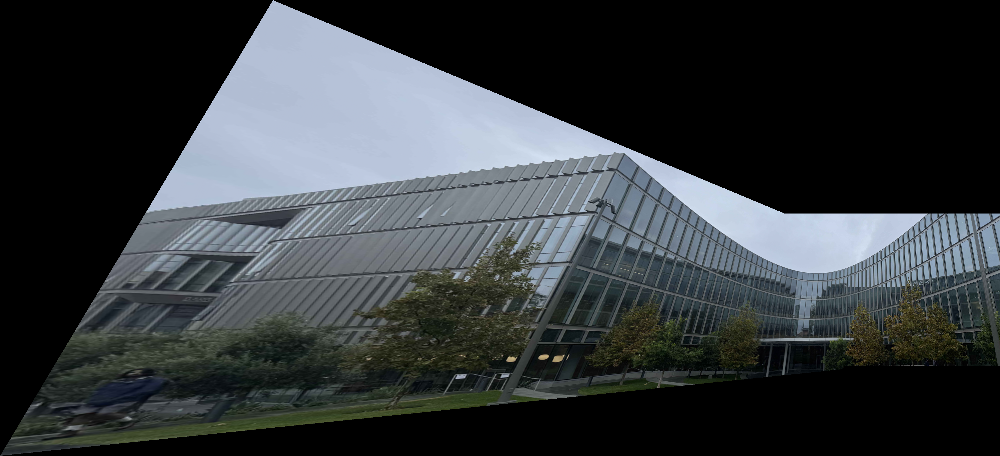
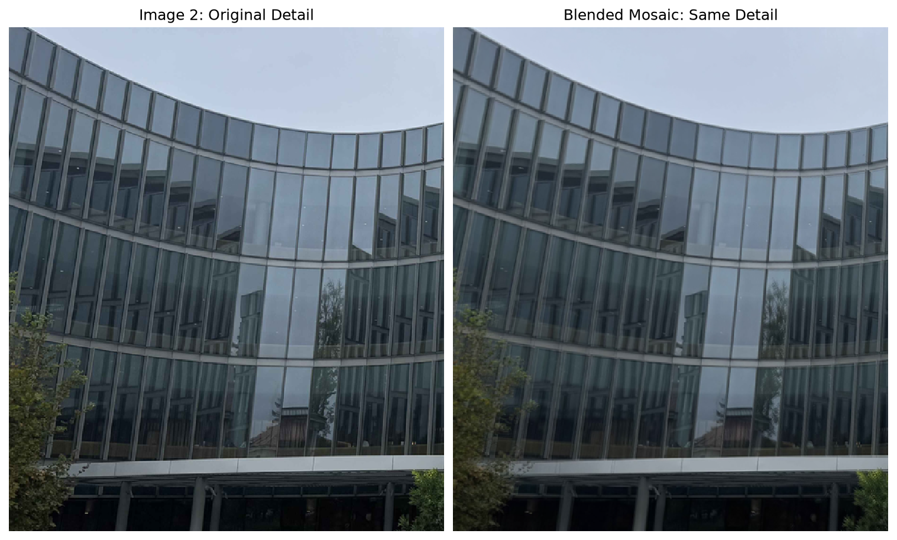
The building joins across the overlap, although some window edges and foliage look softened or doubled. The left side stretches strongly in this projection.
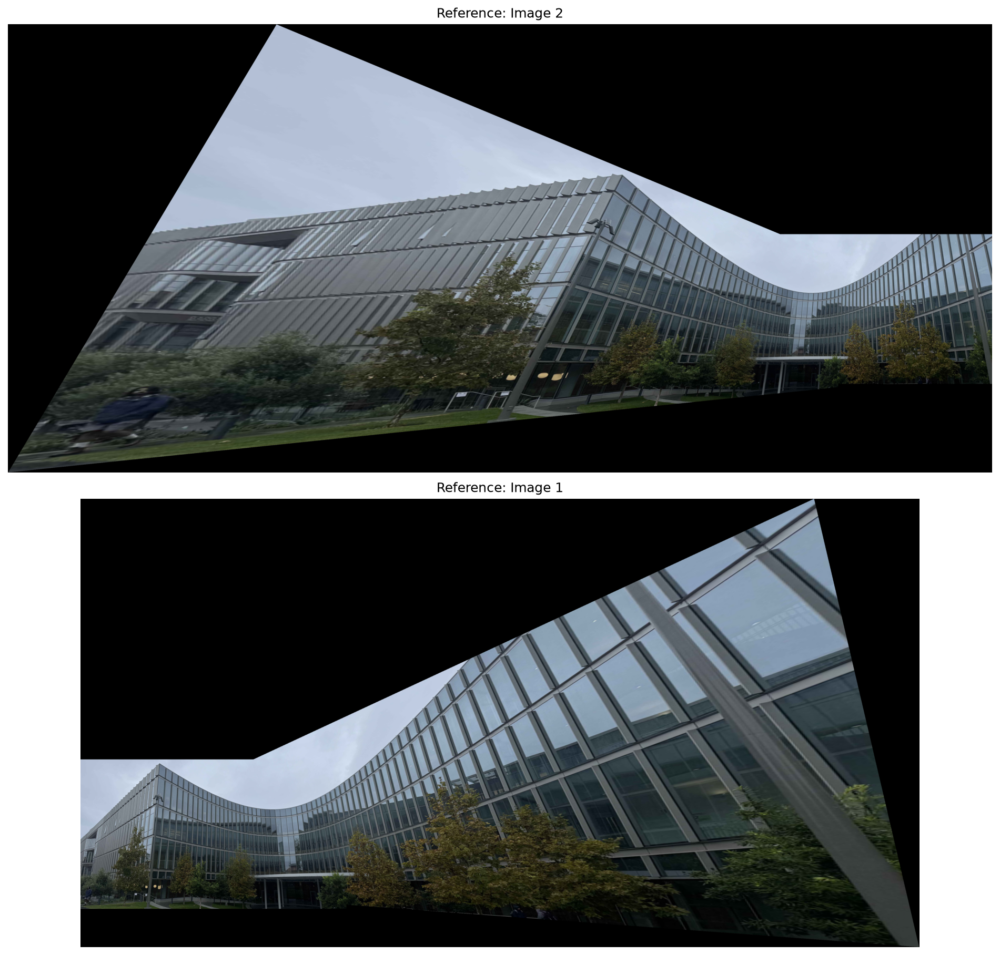
Changing the reference moves the strongest distortion to the other side. It changes the appearance of the mosaic but does not remove alignment errors.
Mosaic 2: Opposite Gateway
↟ View source photographsI use the same procedure, warping image 1 into image 2 and blending with distance-based weights.
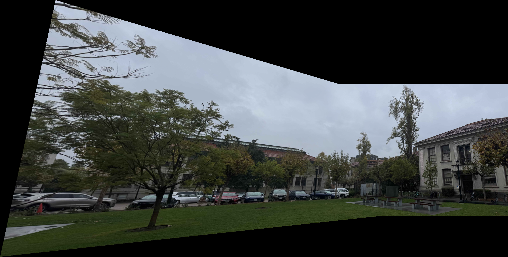
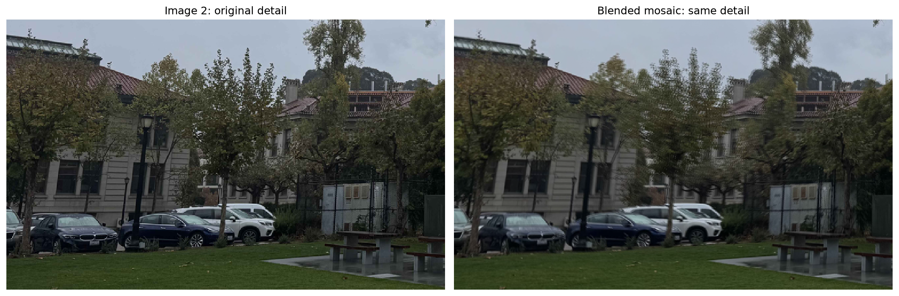
The result extends the view across the lawn. Some foliage, car edges, and building details show ghosting. Manual point errors, slight camera movement, or motion in the scene could contribute. Feathering makes the transition gradual but cannot fix those differences.
Mosaic 3: Iceland River
↟ View source photographsFor this pair, the estimated homography’s denominator changes sign across the full image. The full warp therefore crosses the projective horizon and cannot fit on a finite canvas. The inverse transform has the same problem for the other image.
I warp both images into a shared projection instead. With the estimated $H$ scaled to have $H_{33}=1$, I use:
The last equality preserves the estimated correspondence mapping. This is a chosen projective frame, not a calibrated halfway camera view. I check that both transforms are invertible and their denominators keep one sign at the image corners before warping. Both images then have finite bounds.
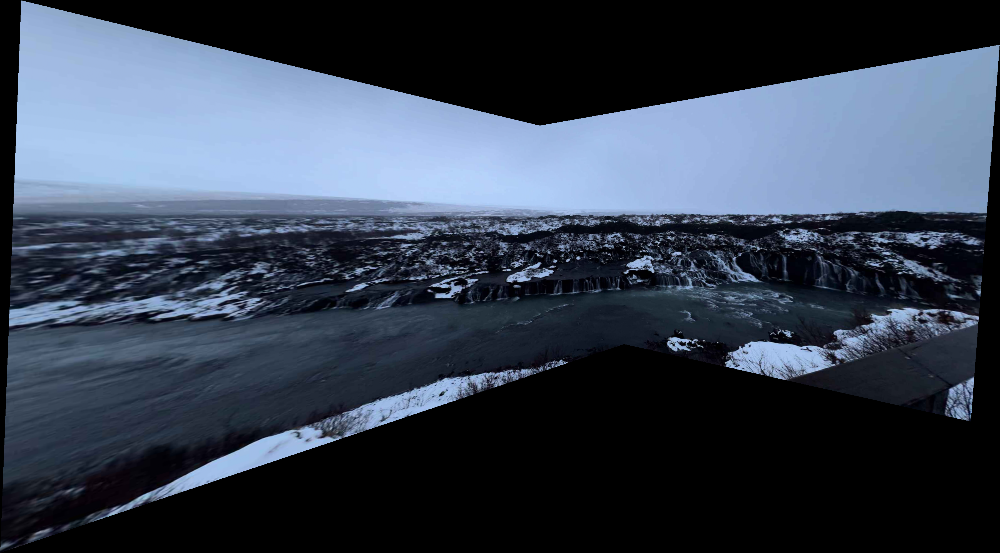
The rocky riverbank connects through the overlap. The outer portions are stretched and softened, especially on the left. Flowing water changes between images, so its details do not all coincide. The shared projection makes the canvas finite but does not correct these differences.
Additional Blending Comparison
I compare feather blending with a two-band blend while keeping the manual homographies and output frames fixed. A Gaussian blur with standard deviation 5 output pixels separates each warped image into smooth color and fine detail. I divide the blurred masked colors by the blurred validity mask to prevent empty black pixels from darkening the boundaries.
I feather the smooth bands with the same distance-based weights as before. At each pixel, I take the detail band from whichever image has the larger weight. Selecting one detail band avoids averaging displaced sharp edges, but a change in the selected image can introduce a seam. This is a two-band blend rather than a full multilevel Laplacian pyramid.
Gateway
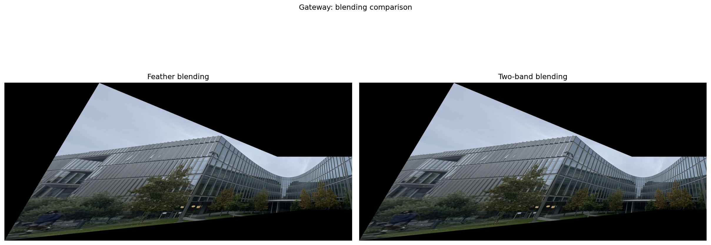
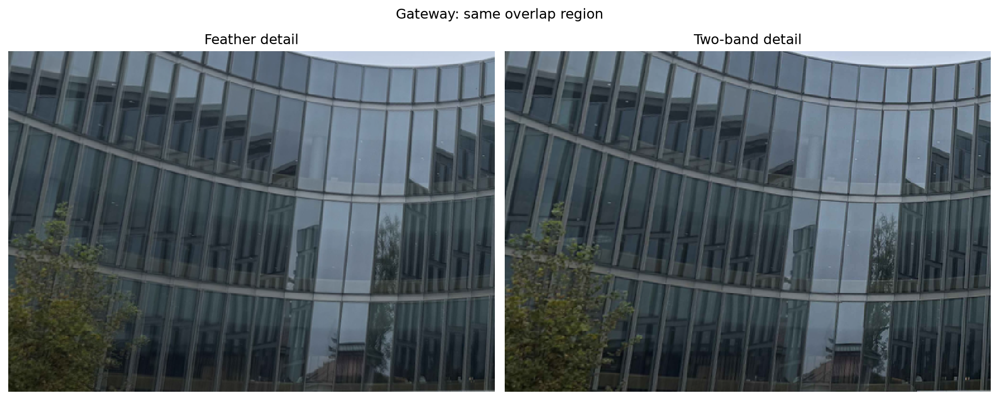
Opposite Gateway
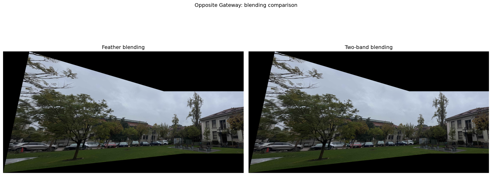
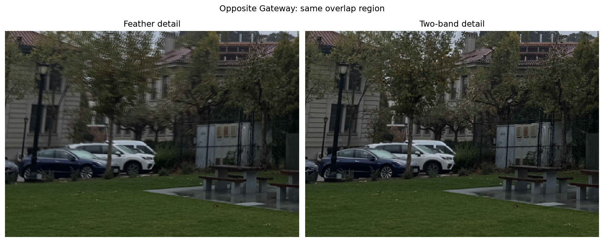
Iceland River
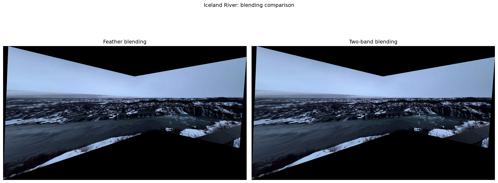
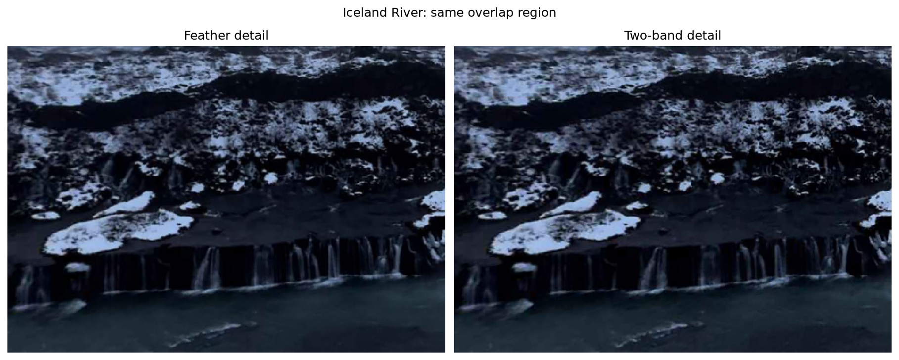
The two-band results retain sharper window frames, foliage, and car edges than broad feathering. Some riverbank details also look less doubled. The change is easier to see in the close-ups than in the full mosaics. Neither blend fixes the underlying correspondence errors, and broad displaced structures or moving water can still disagree.
A.5: Cylindrical Projection
I use a cylindrical destination surface for the two campus scenes to reduce the side stretching of a wide planar mosaic. I retain the manual homography and apply the same change of output coordinates to both views. This differs from assuming that independently cylindrical-warped images can be stitched by translation alone.
Let the reference image center be $(c_x,c_y)$ and let $f$ be an approximate focal length in working-image pixels. The forward cylindrical coordinates are:
For inverse sampling, I recover a reference-plane position from each cylindrical output pixel, then apply the inverse source-to-reference homography:
I bilinearly sample the resized source photographs directly. I do not resample a previously stitched panorama. Sampling the transformed image boundaries determines the curved output bounds, with a two-pixel margin. Both the planar and cylindrical views below use two-band blending.
Focal-Length Comparison
I compare $f/W=0.5$, $0.7$, and $1.0$ at zero pitch, where $W=1400$ pixels. A smaller focal length compresses the view more horizontally. I select $f=980$ pixels as a visual compromise between the more compressed 700-pixel view and the wider 1400-pixel view. This is a display parameter under an approximate camera model, not a calibrated focal-length measurement.
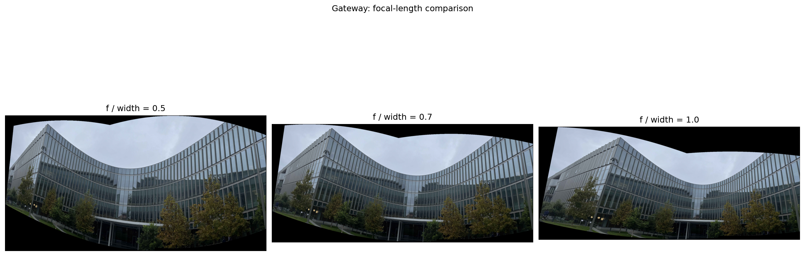
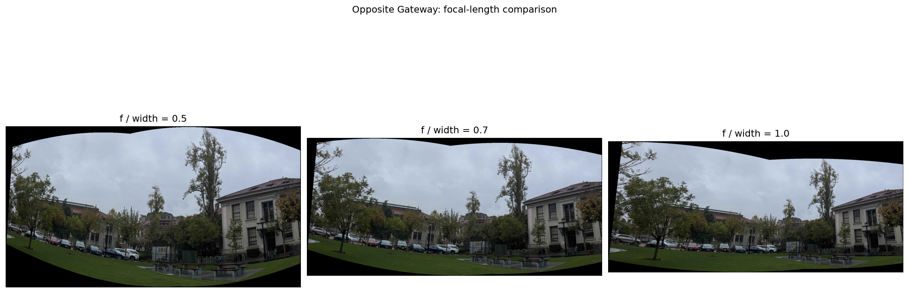
Pitch Comparison
To reduce the inherited camera tilt, I rotate viewing rays before cylindrical sampling. I use $Q=KR_x(\alpha)K^{-1}$, where $K$ contains the approximate focal length and image center. The source mappings become $QH$ and $Q$, so their estimated alignment is preserved. This changes the viewing orientation rather than rotating the finished panorama as a flat image.
At $f=980$ pixels, I compare pitch adjustments of 0, 15, and 30 degrees. The 15-degree view makes the buildings look more upright and the ground less tilted. The 30-degree view overcorrects both scenes. These angles are chosen for presentation rather than recovered camera poses.
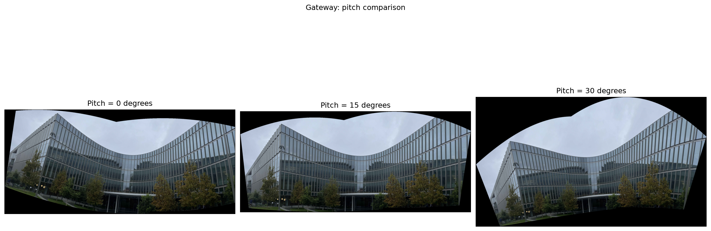
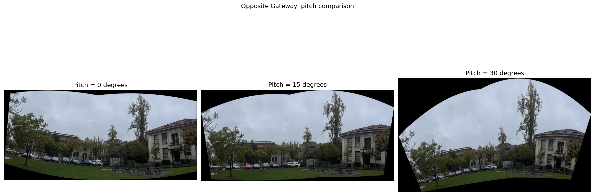
Selected Cylindrical Results
| Scene | Focal length | Pitch | Output size |
|---|---|---|---|
| Gateway | 980 px | 15° | 2046 × 897 |
| Opposite Gateway | 980 px | 15° | 1888 × 891 |
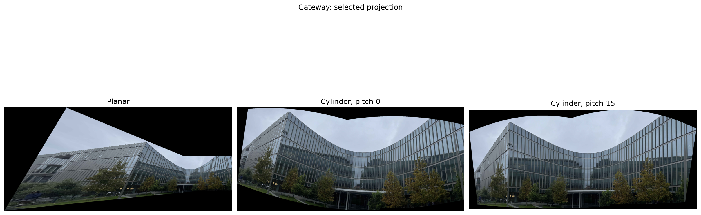
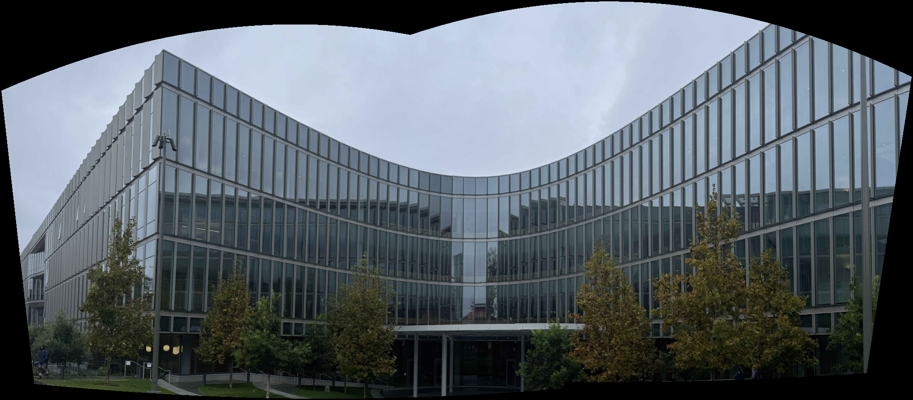
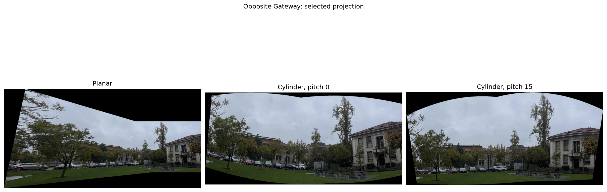
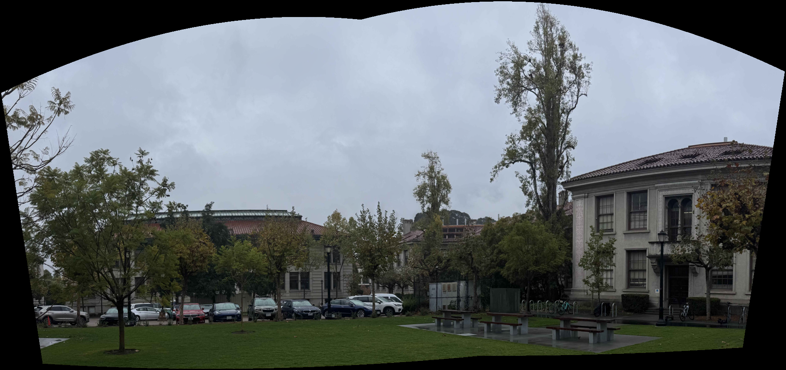
The selected views reduce the severe stretching on the left side and give a more upright presentation. Curved boundaries and black uncovered regions remain. Cylindrical projection redistributes distortion but does not repair parallax, motion, or local alignment errors. I retain the complete boundaries rather than cropping away scene content.
Part A Summary
The two rectification examples show that the homographies and inverse warps can recover rectangular objects with the specified proportions. Bilinear interpolation reduces jagged edges but softens some texture and takes longer than nearest neighbor in these measurements.
The three mosaics show a separate limitation: low error at the selected points does not guarantee alignment everywhere. Feather blending reduces abrupt seams, while the overlap close-ups still reveal ghosting. The Gateway reference comparison and the Iceland shared projection also show how the choice of output coordinates affects stretching.
The extensions separate two improvements: two-band blending retains sharper local detail, while cylindrical projection and pitch adjustment reduce the stretched, tilted appearance of the campus mosaics.
Part B: Feature Matching for Autostitching
I automate correspondence selection for the same Gateway, Opposite Gateway, and Iceland River pairs. The pipeline is Harris detection, adaptive non-maximal suppression, normalized patch descriptors, ratio-test matching, and four-point RANSAC. The source photographs and 1400-pixel working resolution are the same as in Part A.
I follow the simplified pipeline in Brown, Szeliski, and Winder: Multi-Image Matching using Multi-Scale Oriented Patches. Detection is single-scale and descriptors are axis-aligned. I do not implement the optional multiscale, rotation-invariant, or panorama-recognition extensions in Part B.
B.1: Harris Corners and ANMS
Harris Corner Detection
I convert the images to grayscale and use scikit-image’s Harris detector with $k=0.05$ and Gaussian scale $\sigma=1$. I retain positive local maxima above 1% of the maximum response, with a 20-pixel border excluded for descriptor extraction. Points are stored as $(x,y)$ coordinates, without subpixel refinement.
| Pair | Image 1 candidates | Image 2 candidates | ANMS per image |
|---|---|---|---|
| Gateway | 1,546 | 1,225 | 500 |
| Opposite Gateway | 4,189 | 3,495 | 500 |
| Iceland River | 4,068 | 2,971 | 500 |
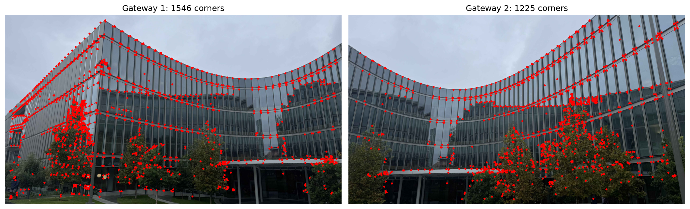
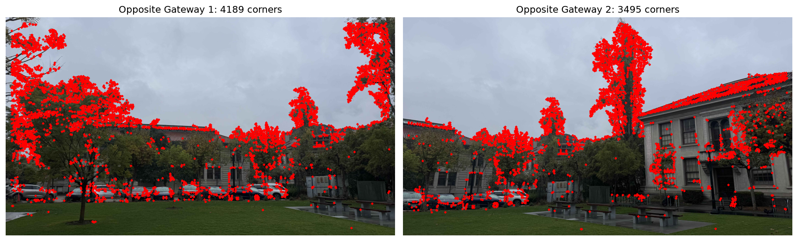
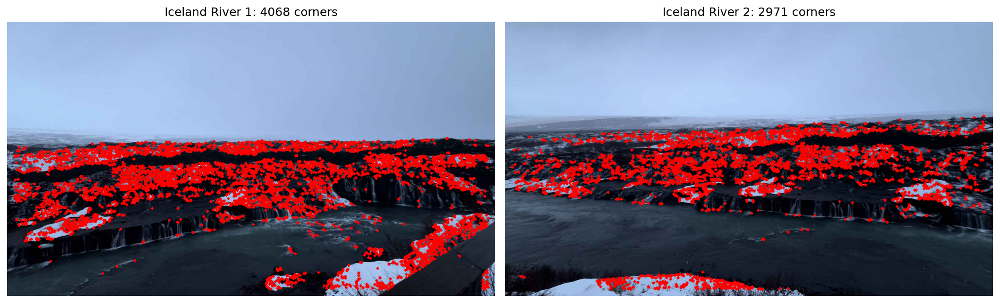
Adaptive Non-Maximal Suppression
I implement ANMS by measuring each candidate’s distance to its nearest sufficiently stronger corner, using robustness factor $c=0.9$. I retain the 500 largest suppression radii. If no sufficiently stronger point exists, its radius is infinite. Ties retain their original order.
The comparisons below use equal-sized selections: the 500 strongest Harris responses and the 500 ANMS points. ANMS spreads points across the facade, buildings, and riverbank instead of concentrating them in the strongest textured regions. Empty sky still contributes few usable points. A suppression radius is a distance to a stronger candidate, not a guaranteed minimum spacing between every retained pair.
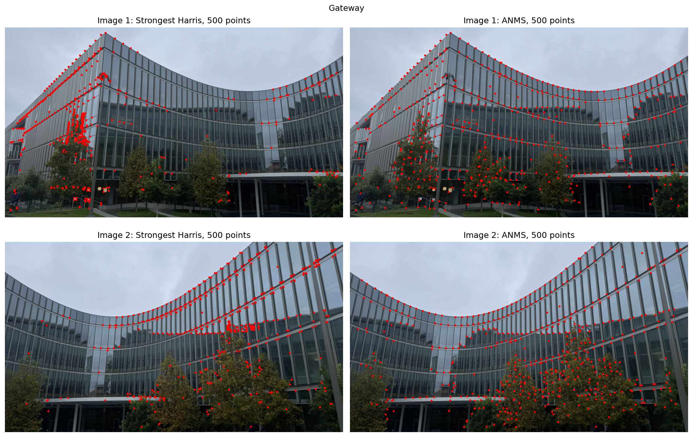
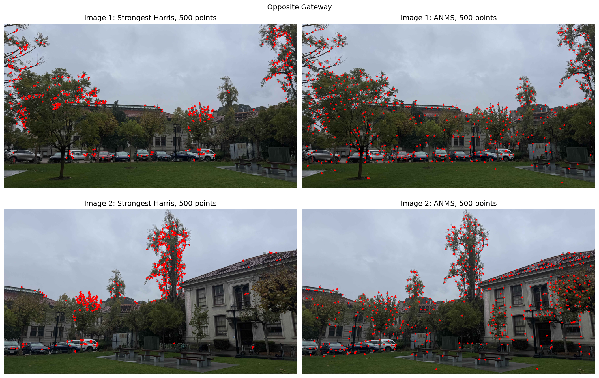
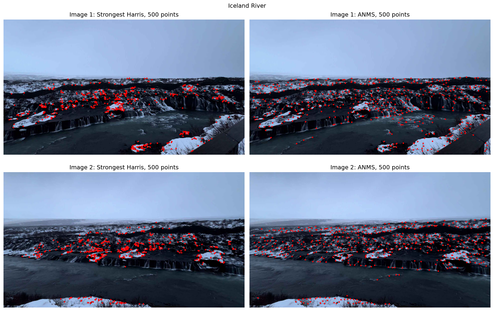
B.2: Feature Descriptor Extraction
I blur each grayscale image with a Gaussian of standard deviation 2 pixels. Around each selected point, I take a 40 × 40 window and sample every fifth pixel, starting at offset 2, to form an 8 × 8 patch. I subtract its mean and divide by its standard deviation, then flatten the result into a 64-value descriptor.
I skip out-of-bounds windows and patches with standard deviation below $10^{-6}$. All six images retain 500 descriptors, with none skipped. Numerical checks confirm finite values, means near zero, and standard deviations near one. Normalization reduces sensitivity to brightness offsets and positive contrast changes, but does not provide rotation or perspective invariance.
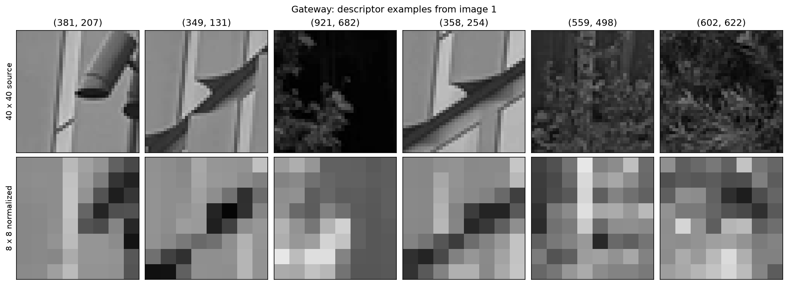
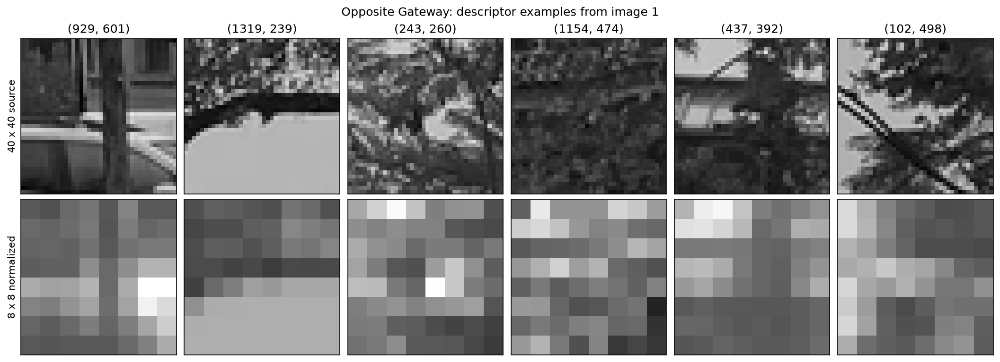
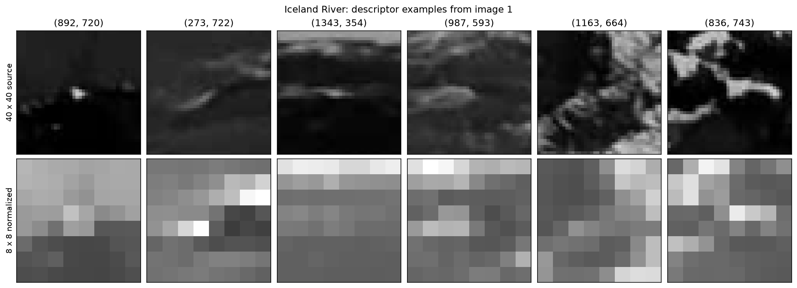
The descriptors preserve broad edges and light-dark structure while smoothing fine texture. Repeated windows and similar natural patterns can still have similar descriptors, so local appearance alone cannot establish a correct correspondence.
B.3: Feature Matching
For every descriptor in image 1, I compute the sum of squared differences (SSD) against all descriptors in image 2. I find the nearest and second-nearest neighbors and accept the best match only when their SSD ratio is below 0.65. This compares how distinctive the best match is, following the ratio-based separation illustrated in Figure 6b of the paper.
The threshold applies to squared distances, not unsquared Euclidean distances. If the second-best error is zero, I reject the ambiguous match. Matching is one-way, so multiple source points can select the same destination. The same threshold is used for all three pairs.
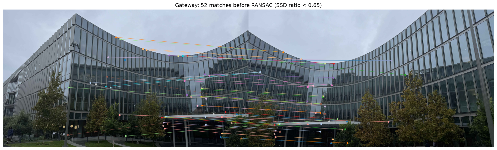
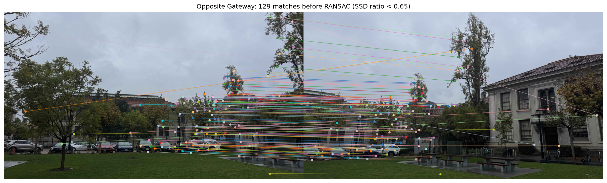
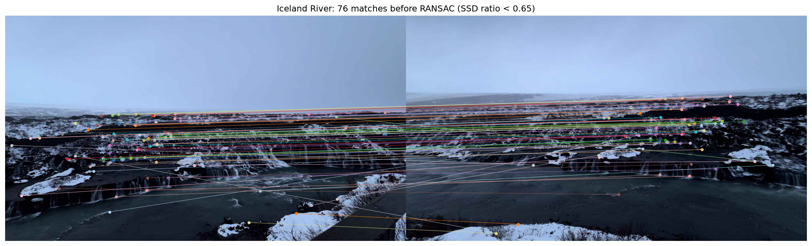
The ratio test retains 52 Gateway matches, 129 Opposite Gateway matches, and 76 Iceland River matches. Many follow the overlap, but some connect unrelated windows, vegetation, or river features. I use geometric consistency to reject these remaining outliers.
B.4: RANSAC and Automatic Mosaics
Four-Point RANSAC
I implement RANSAC from scratch. Each of 5,000 trials samples four matches without replacement and estimates image 1’s homography into image 2 using the Part A solver. Degenerate samples are skipped. A match is an inlier when its forward reprojection error is below 3 pixels at the working resolution.
I retain the model with the most inliers, breaking ties using the smaller mean inlier error. I refit it using its consensus set and recompute the inlier mask and errors. A fixed random seed of 180 makes the sampling reproducible.
| Pair | Inliers / matches | Inlier fraction | RMS error | Maximum error |
|---|---|---|---|---|
| Gateway | 29 / 52 | 55.8% | 0.813 px | 1.789 px |
| Opposite Gateway | 116 / 129 | 89.9% | 1.193 px | 2.531 px |
| Iceland River | 57 / 76 | 75.0% | 0.838 px | 2.739 px |
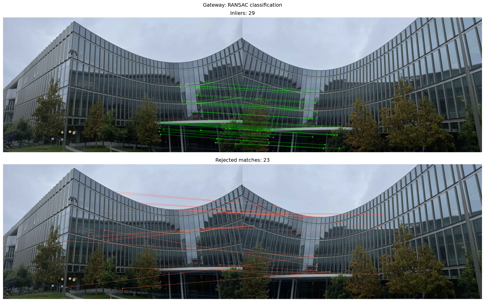
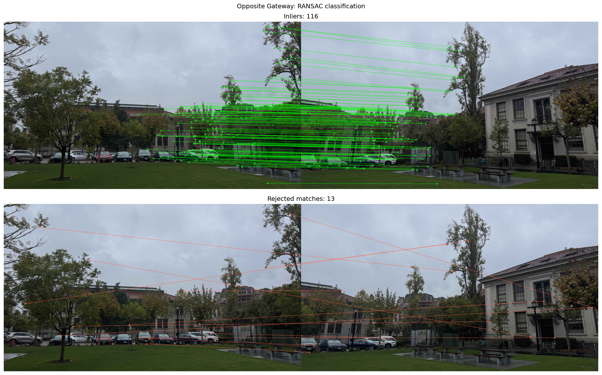
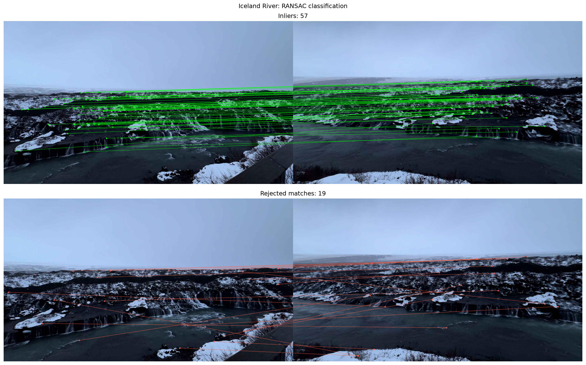
Gateway rejects the largest fraction of matches because repeated windows are ambiguous. Its inliers concentrate near the central facade and entrance. Opposite Gateway has more broadly distributed support, while Iceland retains many matches on the far bank. These errors describe the fitted automatic matches, not independent ground truth. They cannot be directly ranked against Part A’s errors because the point sets differ.
Recovered Homographies
Gateway
Opposite Gateway
Iceland River
Manual and Automatic Stitching
I reuse Part A’s bilinear inverse warp and distance-based feather blending. The campus pairs use image 2 as reference. Iceland uses $G_1=(I+H)/2$ and $G_2=G_1H^{-1}$, with the automatic $H$, to keep both full-image warps finite. I verify the transforms and boundary denominators before allocating their canvases.
These comparisons use the original feather-blended manual results, rather than the optional two-band or cylindrical variants, so the blending method and projection construction match. Different estimated homographies can still produce different canvas shapes and sizes.
Gateway
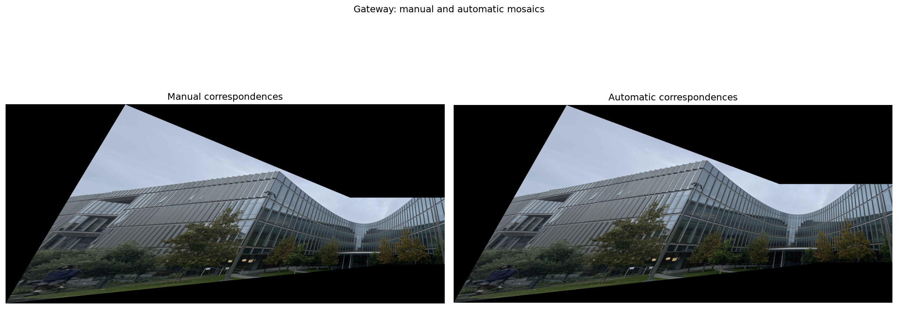
The facade and entrance form a continuous scene, but the roofline and extent of the left side differ from the manual result. Both views stretch the left side in image 2’s reference frame. The automatic canvas is 4414 × 1998 pixels.
Opposite Gateway
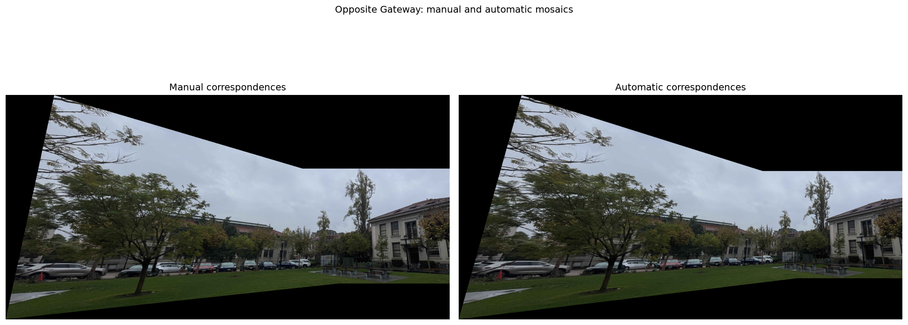
The buildings, parked cars, and lawn have similar overall alignment in the two results. The automatic view extends somewhat farther on the left. Fine foliage and nearby objects can still show local differences. The automatic canvas is 3257 × 1648 pixels.
Iceland River
The far bank and waterfall ledges form a panorama similar to the manual result. The left side remains stretched and soft, and moving water can disagree between images. The automatic canvas is 3614 × 1978 pixels.
The automatic pipeline produces all three mosaics without manually choosing new correspondences. ANMS improves spatial coverage, the ratio test removes ambiguous local matches, and RANSAC checks geometric agreement. The results remain limited by source detail, moving objects, and the chosen output projection.